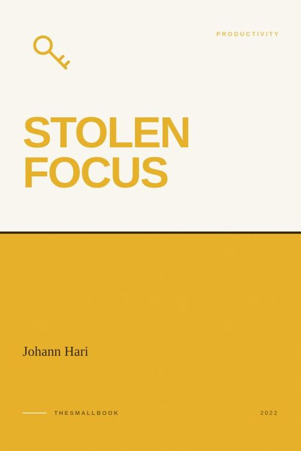

Library › Ask the Library › How do I quit social media / digital declutter?
How do I quit social media / digital declutter?
The short answer
You can't win against apps built by thousands of engineers using willpower. Win with structure: a 30-day declutter, phone-free hours, solitude pockets, and real conversation.
The books behind the answer

Digital Minimalism
Cal Newport · 2019 · 8 min · 6 lessons
Stop optimizing your phone - delete, simplify and rediscover: solitude, conversation and leisure that actually recharge.
- The Digital Declutter: 30 Days That Reset Your Relationship: Remove all optional tech for 30 days, rediscover your values, then reintroduce only what serves them.
- Solitude Deprivation: The Silent Epidemic: Without alone-time with your own thoughts, you don't know what YOU think.

Stolen Focus
Johann Hari · 2022 · 8 min · 6 lessons
Your attention isn't broken - it's being stolen. The system (apps, phones, work culture) is designed against you; fight back structurally.
- The Switching Tax: Every Ping Costs 23 Minutes: Every notification costs 23 minutes of refocusing. Batch your attention or lose your day.
- Reclaim Boredom, It's the Incubator: Boredom is where ideas incubate. The phone kills boredom and therefore kills incubation.
A failure that proves it
Why did MySpace fail?
2009 · BUSINESS · Loss: 100M users → irrelevance
MySpace died when it stopped caring about users. Your feed doesn't care about you either, quit it like you'd quit a sinking platform.
Networks are gardens: monetize before the roots are deep and you get one harvest. The product that respects users' experience longest usually owns them forever.
Questions people ask next
Can I read this in Hindi?
Yes. This answer is written in simple English. Open any linked book and choose Hindi or Hinglish to read the full lessons in your language, with audio where available.